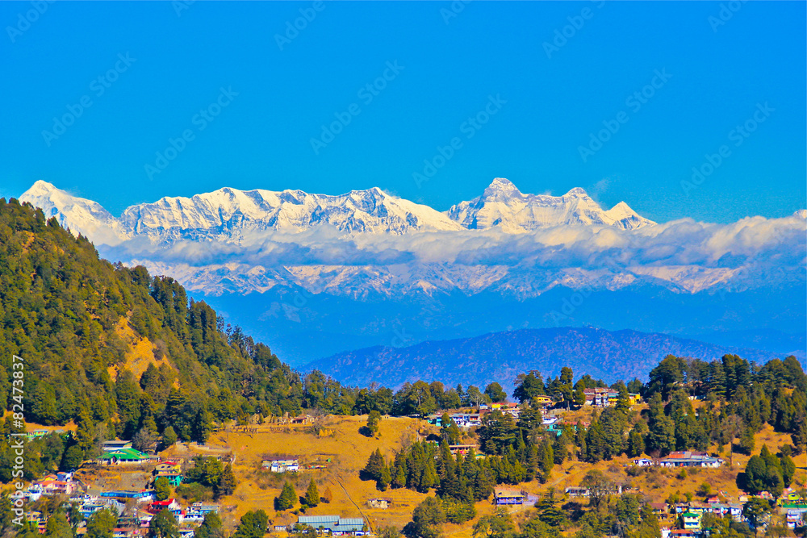
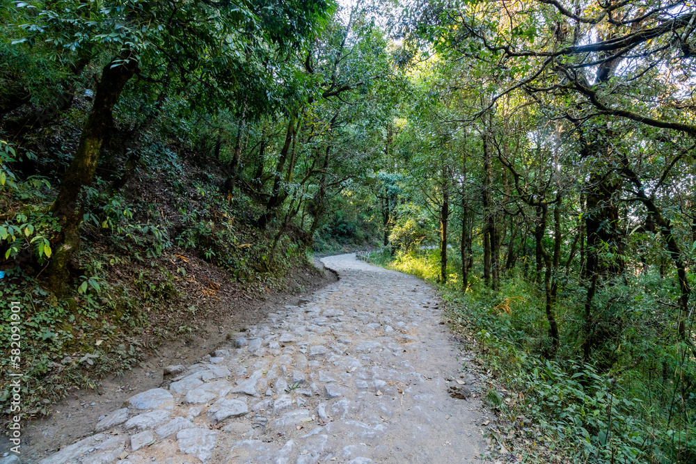
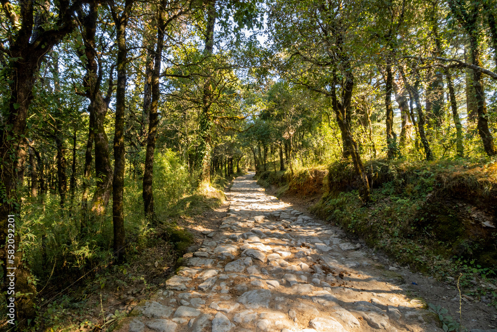
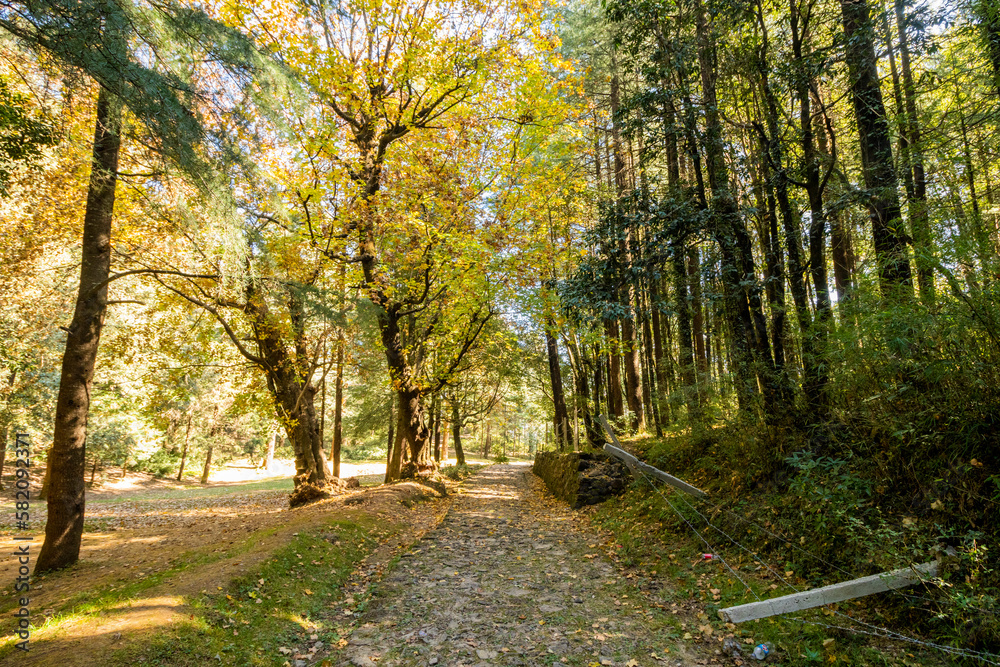
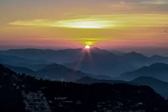
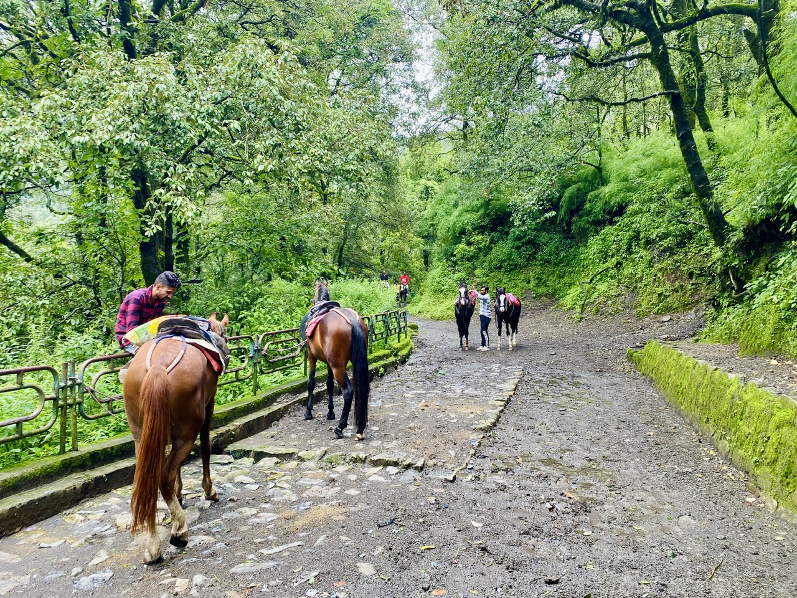
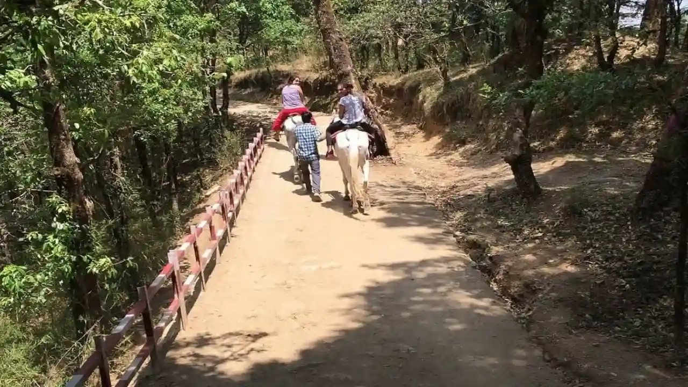

Tiffin Top, also known as Dorothy's Seat, is one of the highest and most scenic viewpoints in Nainital, sitting at an elevation of about 2,290 meters. Named after a British lady named Dorothy who loved to picnic here with her tiffin basket, this spot offers breathtaking panoramic views of the snow-clad Himalayan peaks, Naini Lake, the town below, and the surrounding valleys. It is one of the best places in Nainital to witness a stunning sunrise or sunset.
Reachable by a short pony ride, taxi, or a scenic trek through pine forests from Mallital, Tiffin Top feels like a quiet escape from the busy town. The area has a small temple, benches to sit and relax, and a peaceful atmosphere perfect for meditation, photography, or simply soaking in the Himalayan serenity. On clear days, you can spot distant peaks like Nanda Devi, Trishul, and Panchachuli — making it a favorite among nature lovers, couples, and families seeking tranquility in Devbhoomi.
October to March for clear skies and snow views; early morning for sunrise or late afternoon for sunset — avoid monsoon due to slippery paths.
360° Himalayan panorama, pony ride adventure, serene picnic spot, small temple, and peaceful trekking trails through pine forests.
Wear comfortable shoes for walking/trekking, carry water and snacks, go early to avoid crowds, and book pony ride in advance during peak season.
"Tiffin Top is where the sky kisses the mountains — a silent throne above Nainital, offering peace, perspective, and the pure magic of Devbhoomi’s highest embrace."